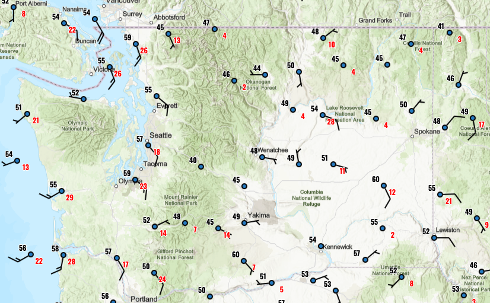
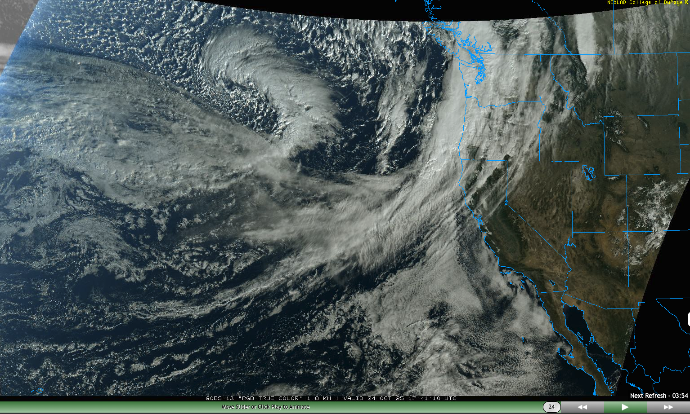
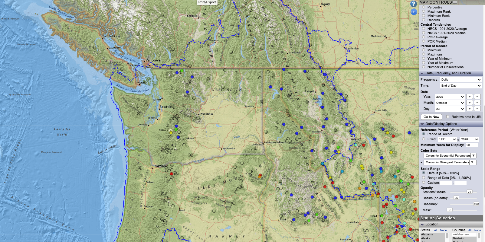
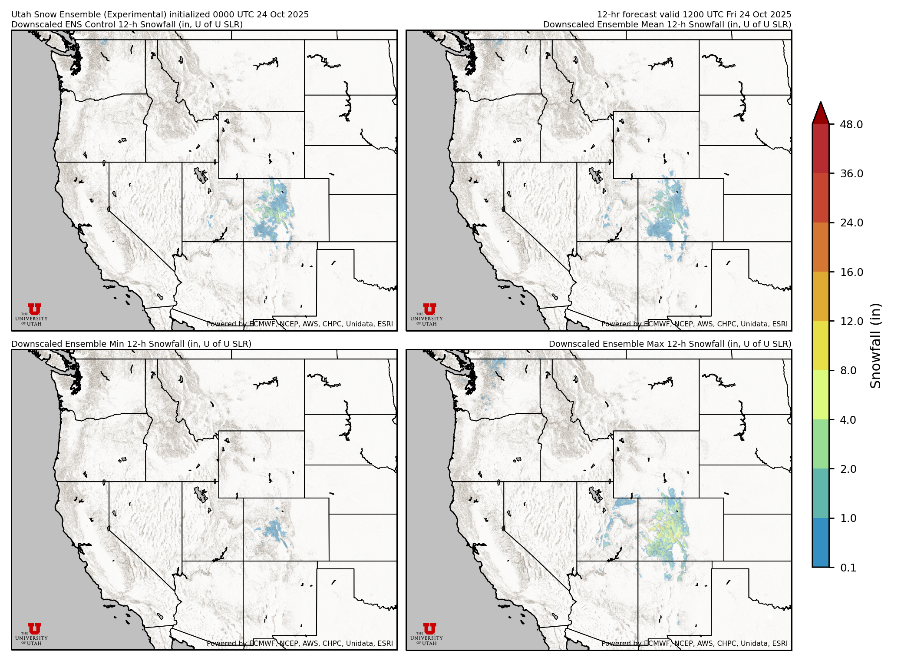
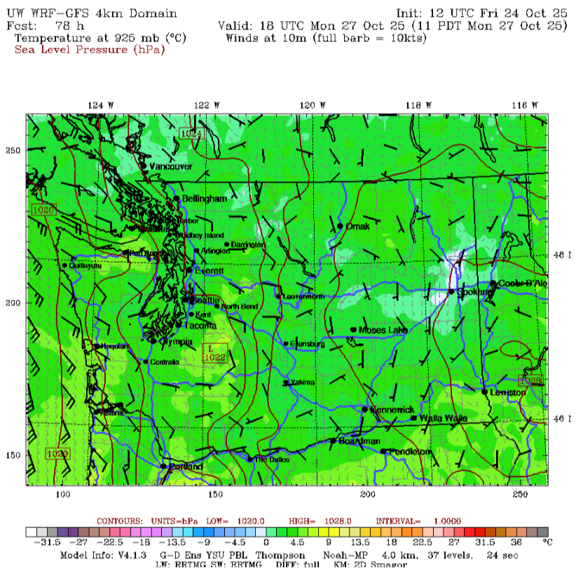
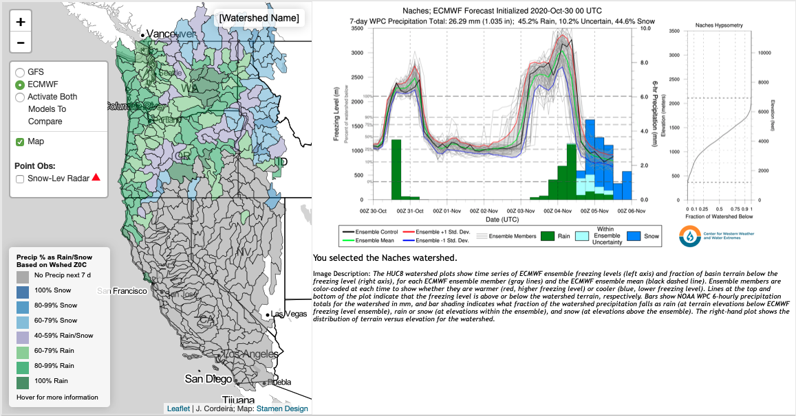
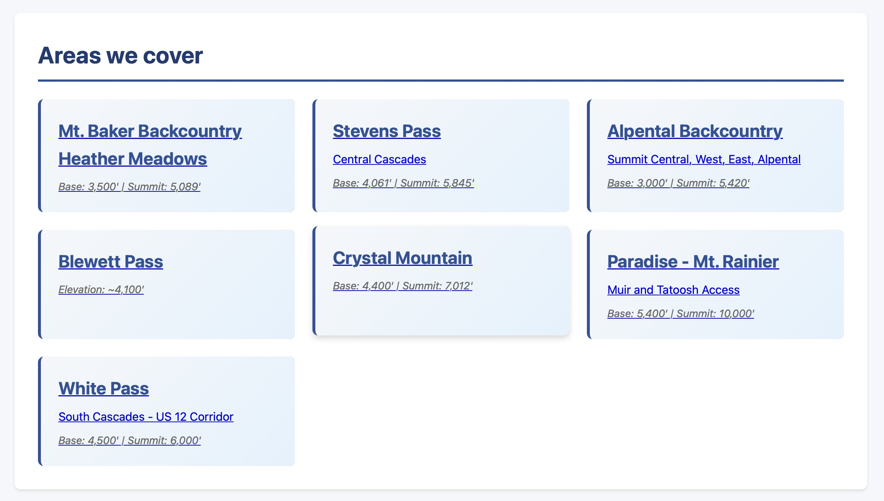

Outreach
Back to Outreach
Forecast Tool
Real Time Observations
NWS Observations Map
Visit NWS Observations

Windy
Visit Windy
College of DuPage GOES Satellite Loops
Visit GOES Satellite

NRCS Snotel Map
Visit SNOTEL Map

Models
University of Utah Snow Ensemble
Visit Utah Snow Ensemble

University of Washington WRF
Visit UW WRF

CW3E Freezing Level Forecast Tool
Visit CW3E Freezing Level

Cascade Mountain Weather
Visit Cascade Mountain Weather
